Plain-language, editable draw.io diagrams of how DERO (DHEBP / Stargate) works — and what can be built on it.
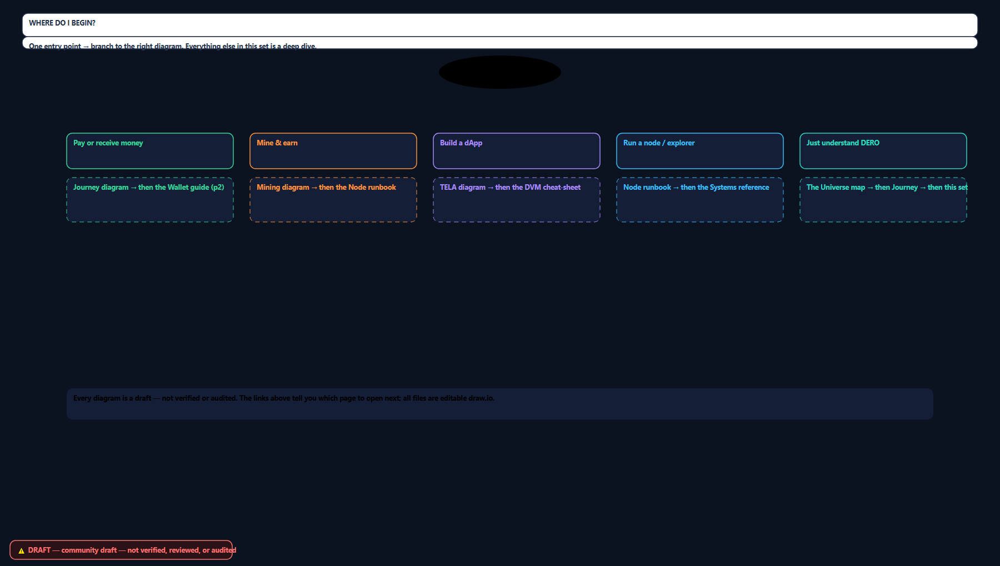
One entry point → branch to the right diagram. The map for the whole library.
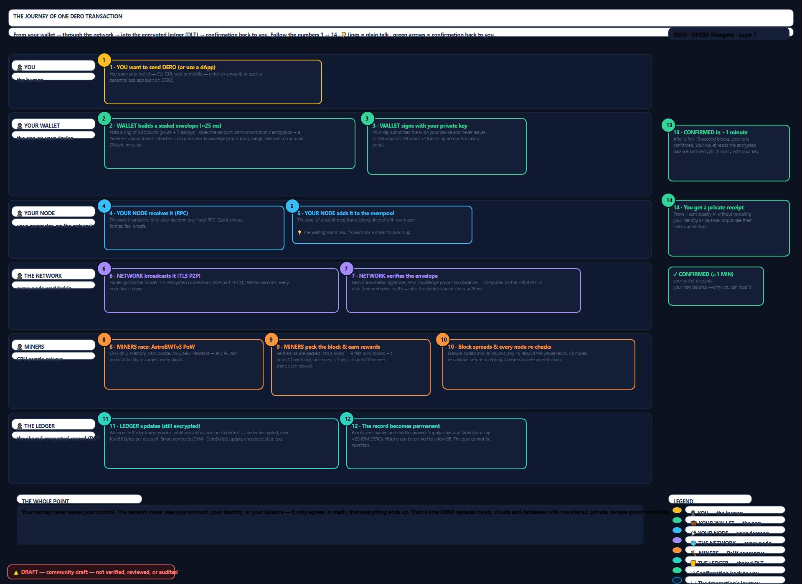
User → wallet → node → network → miners → encrypted ledger → confirmation back to you. The normie classic, numbered 1–14.
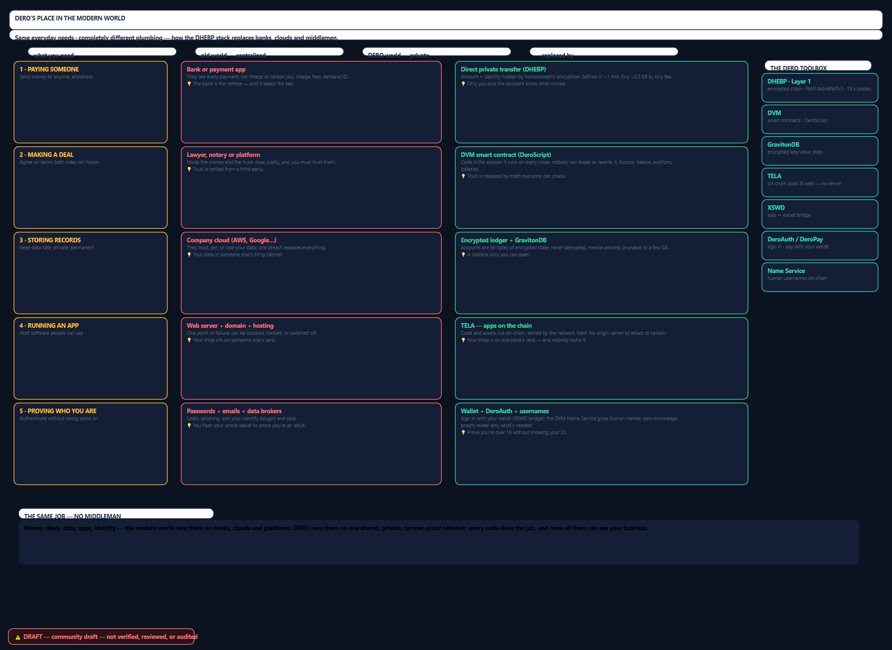
Same everyday needs — paying, deals, data, apps, identity — old world vs DERO world, plus the Swap Table.
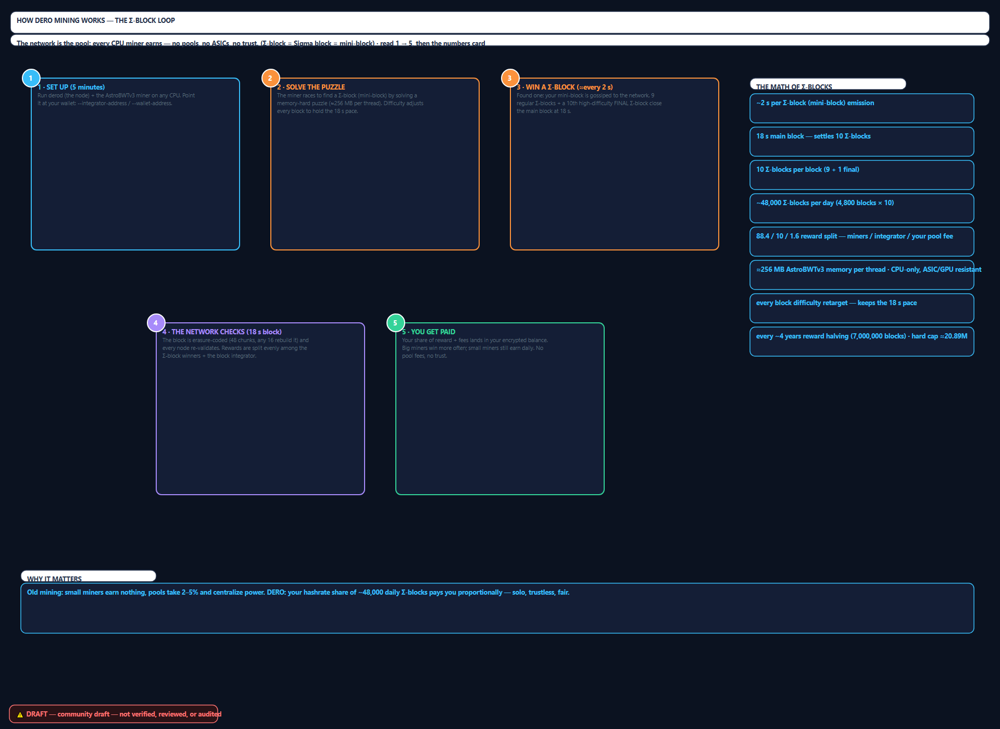
The network IS the pool: ~2s mini-blocks, 18s blocks, 9+1, reward split, CPU-only AstroBWTv3 + mining FAQ.
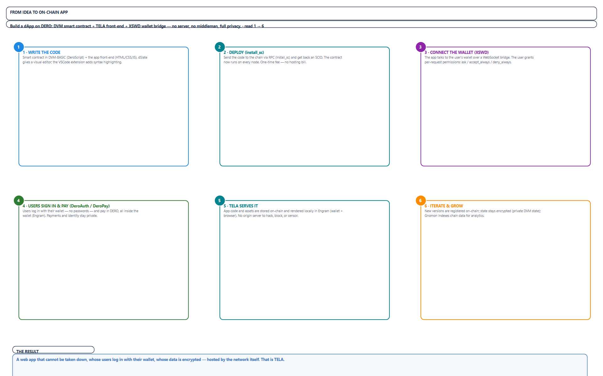
DVM-BASIC → install_sc → XSWD → TELA. The dApp stack + the full community ecosystem index (40+ repos).
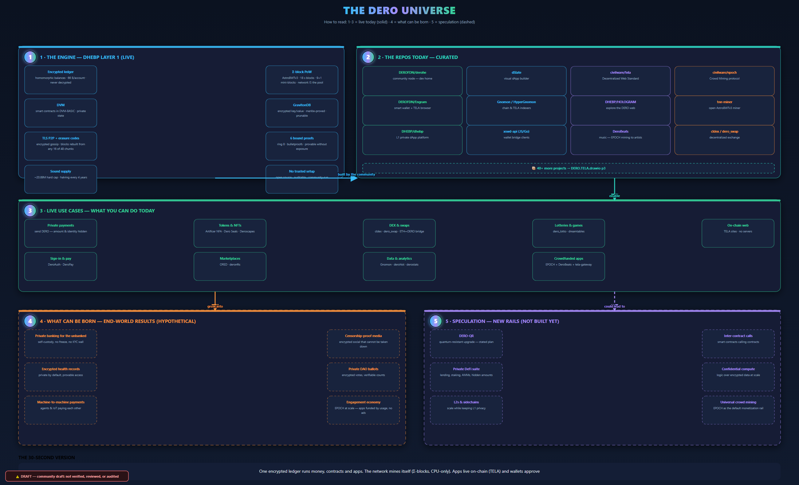
The big map: engine → repos → live use cases → what can be born → speculation. Glanceable titles, deep dives elsewhere.
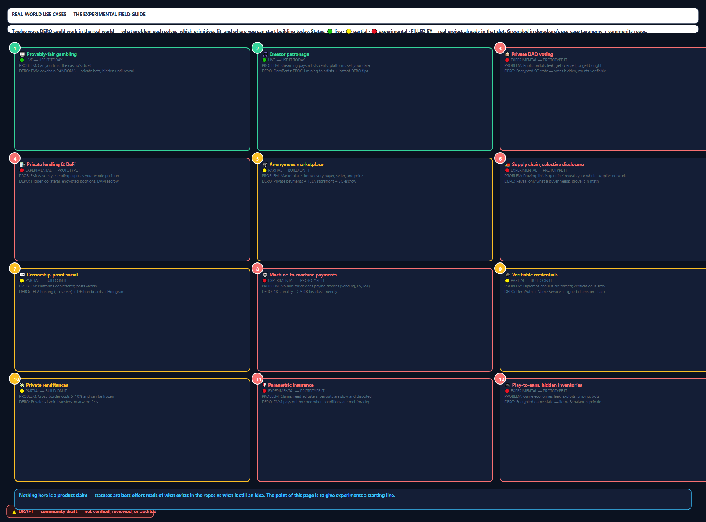
12 use cases with problem → DERO fit → status → FILLED BY. Plus the 5-step ramp and deep dives (M2M payments, parametric insurance).
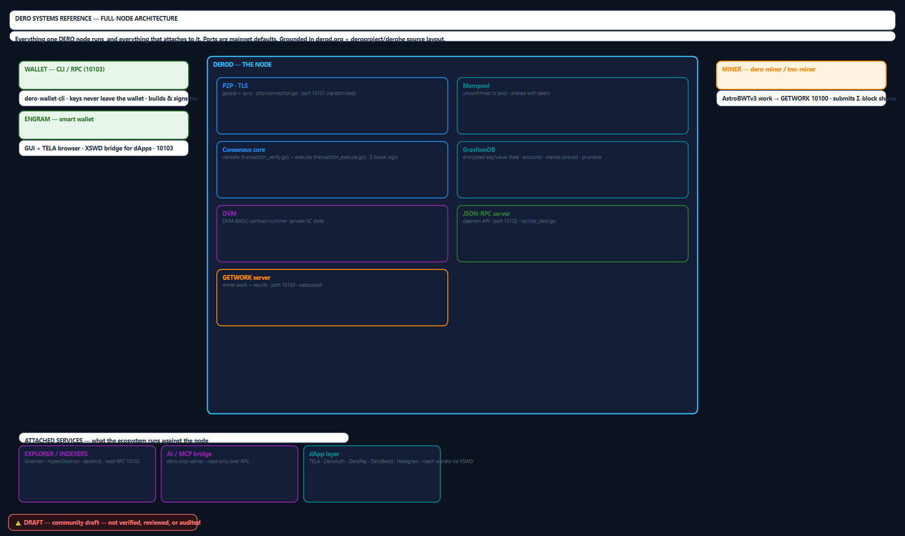
Full-node architecture, network topology & ports, the protocol stack, and the derohe source-tree map.
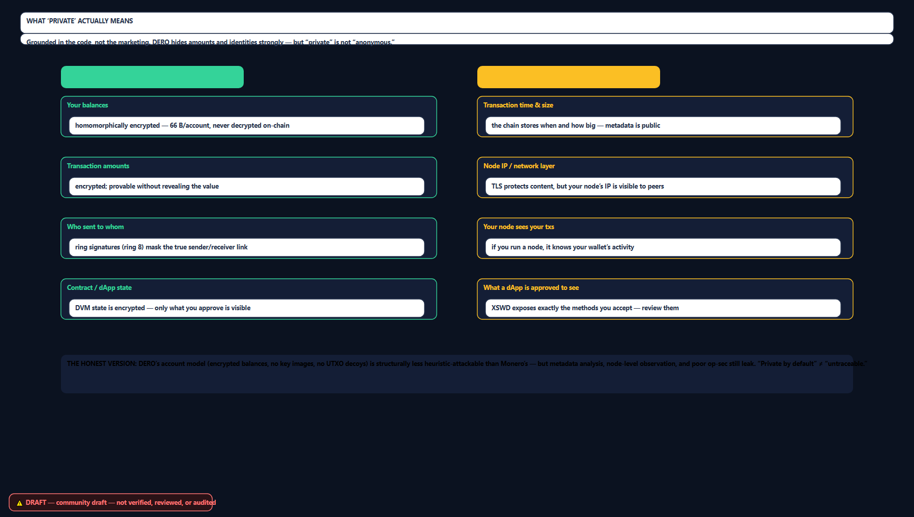
What "private" actually means (hidden vs visible, honest limits) · Privacy Scorecard (DERO vs BTC vs XMR vs ETH) · DERO Economics.
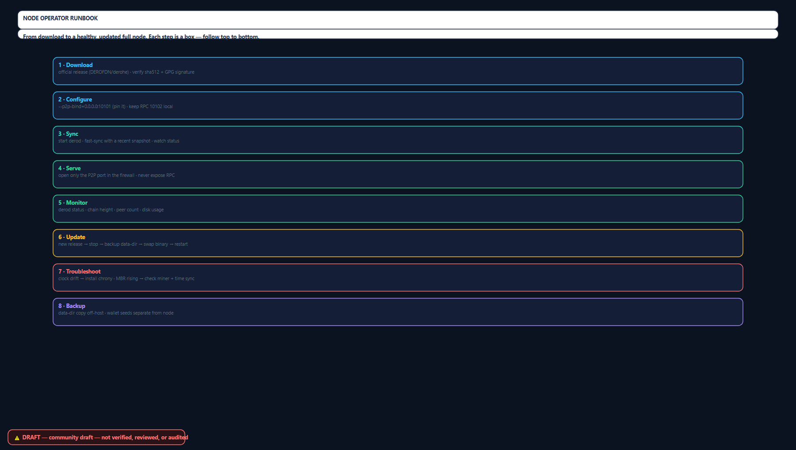
Node Operator Runbook · XSWD Permission Model · DVM-BASIC Cheat-Sheet (gas re-grounded in Release153) · Bridges & Interop.
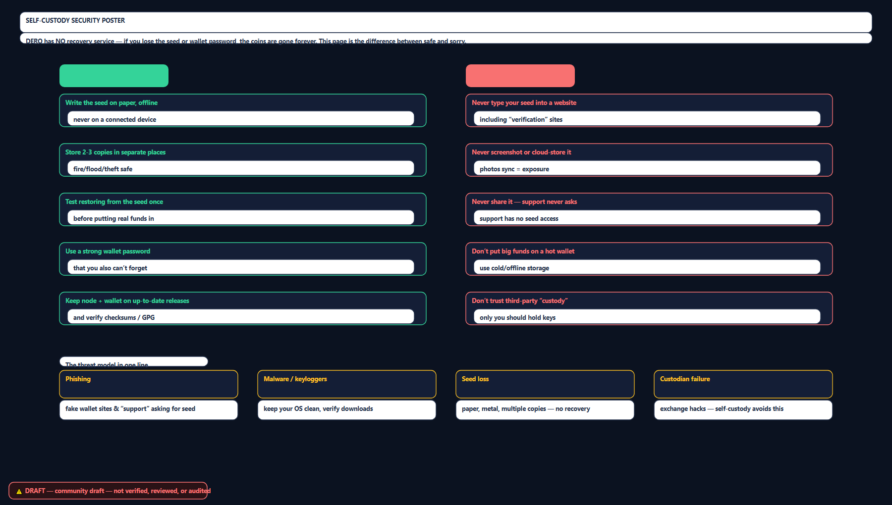
Choose Your Wallet (decision tree) + the Self-Custody Security poster. DERO has no recovery — protect the seed.
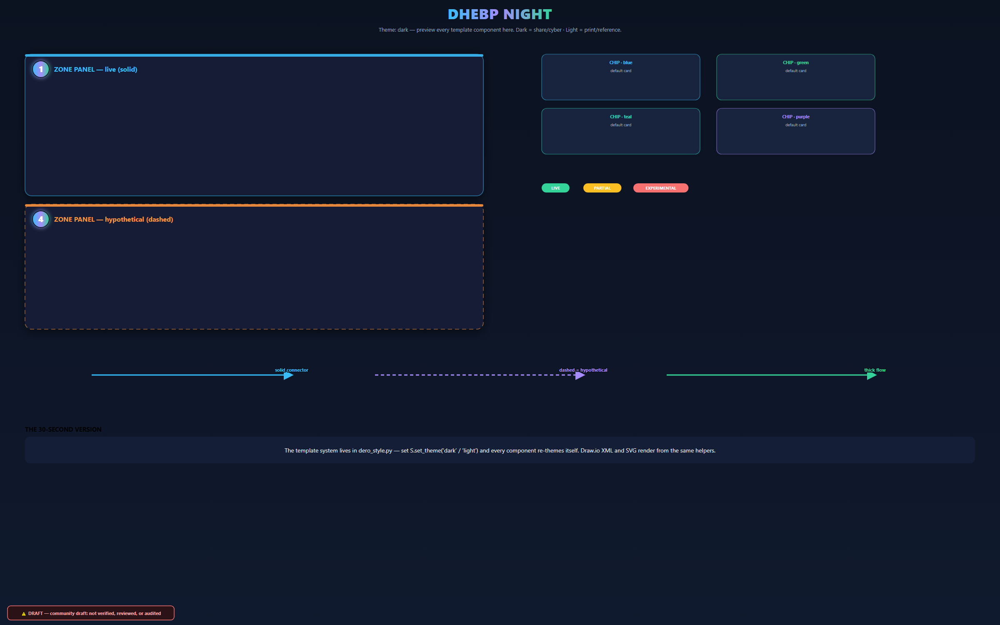
The shared design language: DHEBP Night (dark) + DHEBP Paper (light). Every component — zones, chips, badges, pills, arrows.